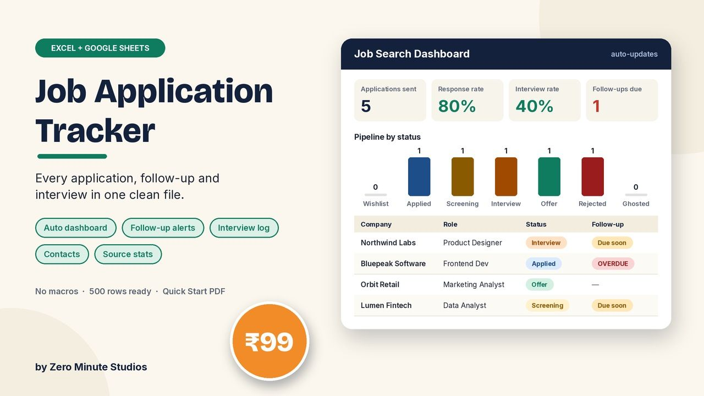
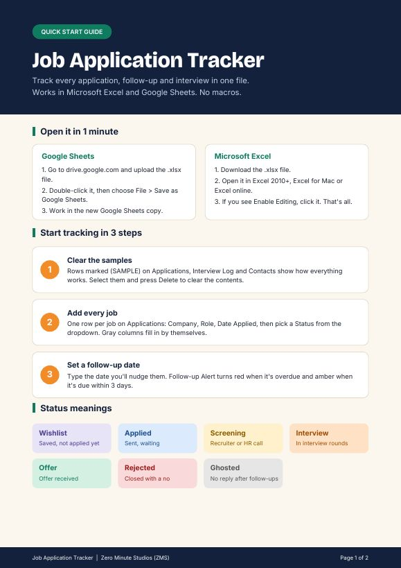
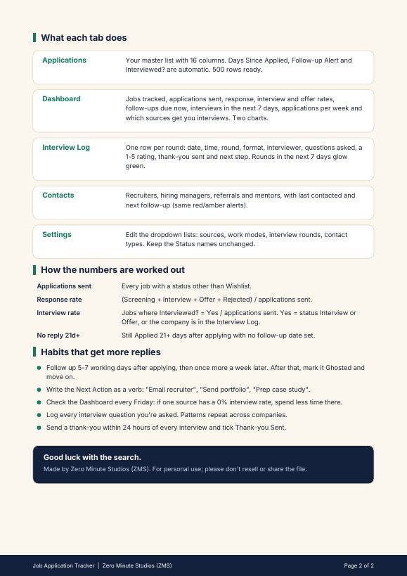

Job Application Tracker for Excel & Google Sheets

Stop losing track of who you applied to. One file holds every application, follow-up date, interview and recruiter contact, and a dashboard shows which sources actually get you interviews.
- Applications tab: 16 columns, 500 rows ready, status dropdown, automatic days since applied
- Follow-up alerts: red when overdue, amber when due within 3 days
- Dashboard: applications sent, response rate, interview rate, offers, follow-ups due, interviews this week, best sources, 2 charts
- Interview Log with questions asked, a 1-5 rating and thank-you sent
- Contacts tab for recruiters, hiring managers and referrals
- Editable dropdown lists, sample rows to show how it works, no macros
Quick Start guide preview


FAQ
Does it work in Google Sheets? Yes. Upload the .xlsx to Google Drive and open it as a Google Sheet, or use Excel 2010 or newer.
Can I edit it? Yes, every list and column is editable.
How do I get it? Instantly after payment, as an .xlsx download.
We don't do refund & return ✌️